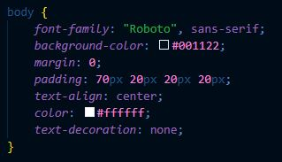
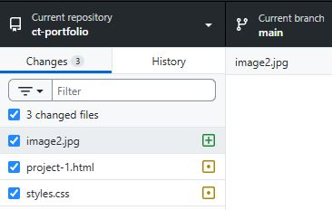

This is my first project for a Computing Technology class. It is to design and program a visually appealing website that functions well as a portfolio to showcase my projects.
Creating this website helped me learn all the components of HTML and CSS. I learnt how to structure
content using tags like <h1> for headings, <p> for paragraphs and
<div> for containers. One thing I learnt is how to link to an external page. I did
this by using ‘a’ as anchor and ‘href’ to specify the URL (example.com). This was important so users
could click on text to lead to another page such as my Github. I wanted my website to be very
minimalistic so I used a navy colour with lighter blue for mouse hovering animations.
A challenge/difficulty I faced while creating my website was how messy my text and boxes were. To fix this, I used CSS Flexbox, which allowed me to position items precisely and create a clean, organised webpage. I used the property: ‘justify-content’ to align items inside a Flexbox and also used ‘text-align: center’ to move the text to the middle of the page.
Using Visual Studio Code helped me to easily write my code as it was directly linked to Github Desktop, allowing me to easily commit, push origin and pull origin. This helped me organise and save my project versions so I could always go back to edit. I also used the VSC AI for complex code such as the hovering animation. I made sure to read the code in order to understand how it was done, further helping my learning progress.
Google and Youtube were important tools in my project as they taught me how to do things that I didn’t learn in class. One example is the favicon for my website tab. I watched a Youtube tutorial and copied it to set an icon for my portfolio.
Overall, creating this project helped me understand how coders create webpages using HTML structure and CSS styling. I also learnt how to use Github and VS Code efficiently.


